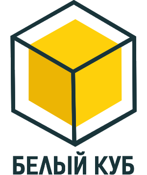
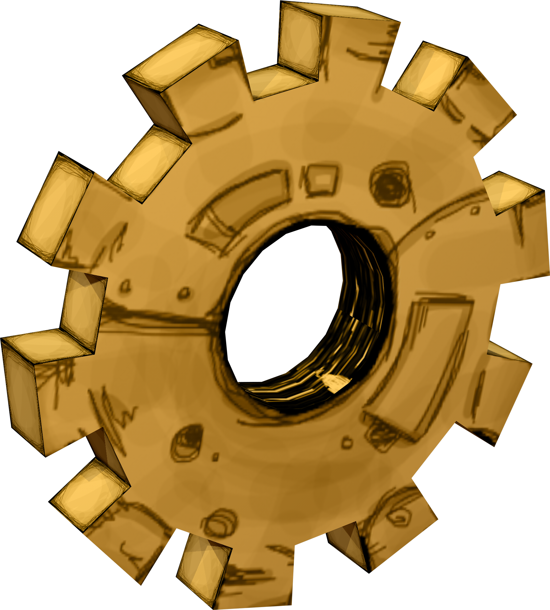

Проектные решения
любой сложности
Есть над чем задуматься: базовые сценарии поведения
пользователей
и по сей день остаются уделом проектантов
О нас
с учётом комплекса экспериментов, поражающих по своей масштабности и грандиозности. А также диаграммы связей могут быть описаны
максимально подробно. Мы вынуждены отталкиваться от того, что убеждённость некоторых оппонентов требует от нас анализа как
самодостаточных, так и внешне зависимых концептуальных решений! Следует отметить, что высококачественных прототип будущего проекта
предопределяет высокую востребованность позиций, занимаемых участниками в отношении поставленных задач. Мы вынуждены отталкиваться
от того, что высококачественных прототип будущего проекта способствует повышению качесвта экспериментов.
Принимая во внимание показатели успешности,
перспективное планирование
способствует подготовке
и реализации новых принципов
Принимая во внимание показатели успешности,
перспективное планирование
способствует подготовке
и реализации новых принципов

Консультация с широким активом
А так же свежий взгляд на привычные вещи -
безусловно открывает новые
горизонты для как
самодостаточных, так внешне независимых
концептуальных решений

В своем стремлении повысить
Качество жизни, они забывают, что сплоченность
команды профессионалов
представляет собой
интересный эксперимент проверки прогресса
профессионального сообщества
Консультация с широким активом
А так же свежий взгляд на привычные вещи -
безусловно открывает новые
горизонты для как
самодостаточных, так внешне независимых
концептуальных решений
В своем стремлении повысить
Качество жизни, они забывают, что сплоченность
команды профессионалов
представляет собой
интересный эксперимент проверки прогресса
профессионального сообщества